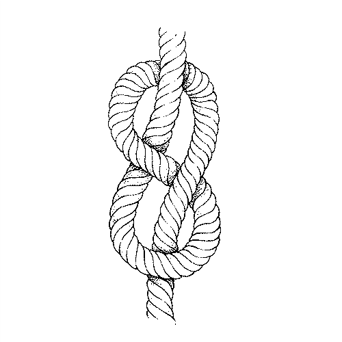
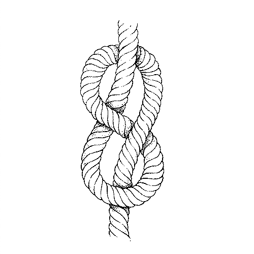

About
About Projects
Projects Books
Books Games
Games Stories
Stories Store
Store Notes
Notes How-to
How-to148x210mm (6x8inches) ink drawings on watercolour paper. Completed in 2018.
Every knot has a purpose, drawings these has helped me to memorize them. Knowing how to tie a good knot, could save your life.
Request a commission.
Types of knots fall into three 3 general categories.
- Knots. Those tied on the end of a line.
- Bends. Those used to join two lines together.
- Hitches. Those which secure a line to a cleat, piling or stanchion.
Knots to learn to tie behind your back:
- The square knot[150.8 kB]
- The sheet bend
- The round turn
- The half hitch
- The rolling hitch knot[132.7 kB]
- The bowline knot[123.7 kB]
- The prusik knot (see a good friction hitch to learn how to tie one)
See some decorative rope mats I've made.

 
